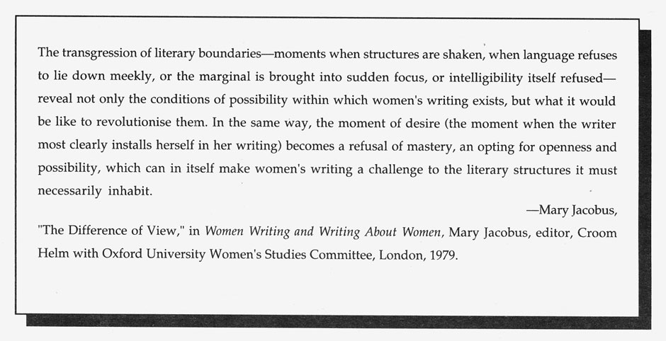

.endnotes
HOW(ever) is available in a fourth series of four numbers. For libraries interested in purchasing the complete series, beginning with Volume I, we have a limited number of archival sets available. Single copies are not for sale, except on a limited local basis, nor are free sample copies available. Subscription checks should go to HOW(ever), c/o Jaffer, 871 Corbett Avenue, San Francisco, CA 94131. Editorial correspondence for the next issue, including material for alerts and postcards, should be sent to Susan Gevirtz, 578 Precita, San Francisco, CA 94110.
Editor's Notes
If we are politically engaged as poets, are we not called upon to investigate our experience through the re-structuring of it? Noting the insistence of tradition--the stanzaic corsetting of Emily Dickinson's wayward lineation by her well-meaning editors--we are reminded that such assumptive judgments still dominate editorial practice. In this issue, we are looking at the way hierarchies of power get reproduced in daily experience. Re-thinking Dickinson's intentionality, at odds with the poetic blueprint of her age, we can reflect on our own freedom to re-invent the poem's way . . . locating something fugitive and claiming it. Resistance surely flexes itself linguistically.
 •
•
This is Number 4 of Volume III of HOW(ever) ; if you are a subscriber, it is time to renew for Volume IV. $8 for individuals, $10 for institutions. Four issues per volume. Renew NOW. Procrastination is the work of the devil.

go to this issue's table of contents